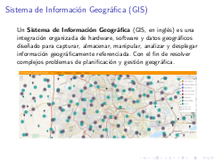

Movimiento Libre
Colección de ideas.
Publicaciones escritas por guivaloz
OpenStreetMap
2014-01-19 20:00 - guivaloz


El pasado 14 de diciembre de 2013 expuse en el Grupo de Usuarios de GNU/Linux de la Laguna el tema OpenStreetMap. De éste material extraigo estos apuntes:

Avistamiento de un bólido
2014-01-14 15:55 - guivaloz
Les informo que mi esposa Rosa Elena y su servidor veníamos conduciendo la mañana de hoy por el Periférico (en Gómez Palacio, Durango, México) y antes de subir el paso a desnivel que está frente a Soriana Hamburgo vimos un bólido surcar el cielo.
Rosy me ha dado dos notas regionales sobre el fenómeno, además de otra por parte de Sergio:
- http://conexiontotal.mx/2014/01/14/meteorito-cae-en-saltillo/
- http://www.vanguardia.com.mx/caeovniensaltilloautoridadeslobuscan-1923456.html
- http://www.elsiglodetorreon.com.mx/noticia/952770.reportan-caida-de-meteorito-en-saltillo.html
¡Fue maravilloso! ¡El más grande y fantástico que haya visto! Lástima que iba manejando y no lo esperábamos (para tratar de tomar video), como suele ocurrir.

Oferta de trabajo
2014-01-13 09:00 - guivaloz
Escribo, en esta ocasión después de mucho tiempo, para hacer de su conocimiento una oferta de trabajo y para que me ayuden a propagar mi llamado.
Tengo una oferta de trabajo para un desarrollador; trabajará conmigo, aprenderá mucho y será estable (el trabajo) por largo tiempo (claro, si hace lo que tiene hacer). Sueldo ~7K.
Deberá aprobar los exámenes que aplicaré.
Distribuciones GNU/Linux, entornos y programas libres
2010-10-19 23:55 - guivaloz


Para el XX Semana Académica en la Universidad Autónoma de Coahuila su servidor elaboró esta amena y visual presentación sobre las distribuciones GNU/Linux y los entornos de escritorio más populares.
Descargar
Virtualización con QEmu
2009-11-28 23:00 - guivaloz


Con motivo del Congreso Iberoamericano FOSS 2009 que organiza la Universidad Autónoma de Zacatecas he elaborado la conferencia Virtualización con QEmu.
En este material se ilustra de forma sencilla cómo se usa el virtualizador QEmu y cómo lo he usado en la impartición de clases de GNU/Linux en la Universidad Tecnológica de Torreón.